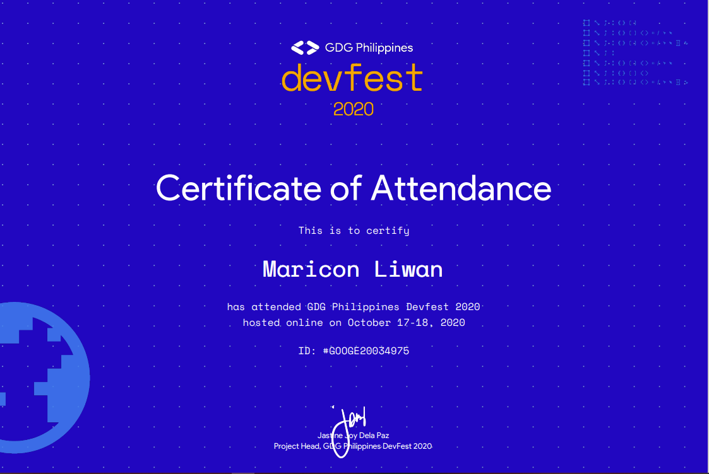

Skills & Certifications

Skills
- C#, HTML/CSS, SQL, Java, Jquery, and JavaScript
- Adobe Creative Suite
- Public Speaking
- Journalism/Writing
- Photography & Filmmaking
- Stress Management
- Logical Reasoning
- Leadership
Certifications
Scholar's Values Formation Program (2021)
- A webinar series under the Filipino Patriot Scholar's Project conducted by the Department of Science and Technology (DOST)
- February 19, 2021

GDG Philippines DevFest (2020)
- Google Developer Group Baguio Volunteer and Participant
- A conference for enthusiasts to share their passion for Android, Web, AI, and Cloud technologies
- October 17-18, 2020
Director's Cut, Champion (2020)
- Tagisan ng Sining - Local Competition
- STI College - Baguio City
- Tagisan ng Sining (TNS) is an annual competition where STI students’ artistry, creativity, and originality come into play.
- February 5, 2020
Essay Does It!, Champion (2020)
- Tagisan ng Talino - Local Competition
- STI College - Baguio City
- From Luzon, Visayas, and Mindanao, STI gives students a chance to showcase their knowledge and abilities in the annual Tagisan ng Talino (TNT) academic competition. With a wide range of events, students from all courses get the chance to prove that they are the best.
- February 5, 2020
Think Quest, Champion (2020)
- Tagisan ng Talino - Local Competition
- STI College - Baguio City
- From Luzon, Visayas, and Mindanao, STI gives students a chance to showcase their knowledge and abilities in the annual Tagisan ng Talino (TNT) academic competition. With a wide range of events, students from all courses get the chance to prove that they are the best.
- February 5, 2020
Code Fest, Champion (2020)
- Tagisan ng Talino - Local Competition
- STI College - Baguio City
- From Luzon, Visayas, and Mindanao, STI gives students a chance to showcase their knowledge and abilities in the annual Tagisan ng Talino (TNT) academic competition. With a wide range of events, students from all courses get the chance to prove that they are the best.
- February 11, 2020
Mukha (2019)
- Cordilleran Glamour Productions Representative
- A competition organized by La Trinidad Barbers and Beautician Association where make up artists, hair stylists, and nail technicians can showcase their interpretations for the Strawberry Month celebration
- March 19, 2019
Visual Graphics (2016)
- Informatics Computer Institute Sholarship Grantee
- An introductory course offered to high school students for Visual Graphics
- January 9 - May 14, 2016
Session Road in Bloom Quiz Bee (2016)
- Rizal National High School (RiNHS) Representative
- An event organized by the Hotel & Restaurant Association of Baguio (HRAB) during the Session Road in Bloom for Panagbenga Festival 2016
- March 1, 2016
YMCA Academic Olympics (2016)
- Rizal National High School (RiNHS) Representative
- An academic olympics organized by the Young Men's Christian Association (YMCA) of the City of Baguio, Inc. with the theme "Sharing a Common Vision, Builiding Sustaunable Communities"
- October 15-16, 2016

Division Students' Leadership Training (2016)
- Rizal National High School (RiNHS) Representative
- A seminar for student leaders held at at Baguio City National High School
- July 22-24, 2016
Leadership Training 101 (2015)
- Rotaract Club of Downtown Session - Baguio
- A seminar for student leaders held at at Rizal National High School
- July 25, 2015